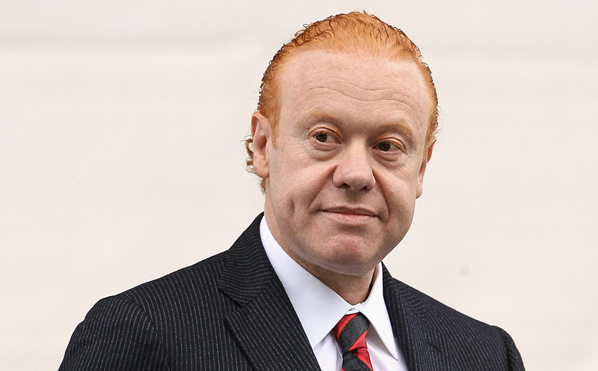

Anthony Joseph Pratt (born 11 April 1960 in Melbourne, Victoria), an Australian businessman and billionaire, is the Executive Chairman of Visy Industries and Pratt Industries in America, which is the world’s largest privately owned packaging and paper company. According to the Financial Review Rich List 2019, Pratt and his family have a net worth of A$15 billion. Forbes assessed Pratt's net worth in 2019 at US$6.8 billion; listing his sisters' wealth independently.
Pratt is the son of the late Richard Pratt, a former manufacturing magnate and former president of the Carlton Football Club, and Jeanne Pratt AC, a philanthropist.
Pratt was born in Melbourne, Victoria to Richard Pratt (né Przecicki) and Jeanne Pratt AC, both Polish-Jewish immigrants. He graduated from Monash University, Melbourne, with a Bachelor of Economics (Hons) in 1982
Pratt sits on the National Board of the Muhammad Ali Center in Louisville, Kentucky, and is also active in charity organizations throughout Australia and the United States. In 1998, he arranged for Muhammad Ali to visit Australia for the Australian Football League grand final, as well as for a subsequent trip two years later.Pratt is a member of the Climate Group, an international environmental group founded by former British prime minister Tony Blair. He has been honoured for his efforts by Mikhail Gorbachev's Global Green USA and Ted Turner's Captain Planet Foundation. Pratt is a member of the United States Studies Centre at the University of Sydney.